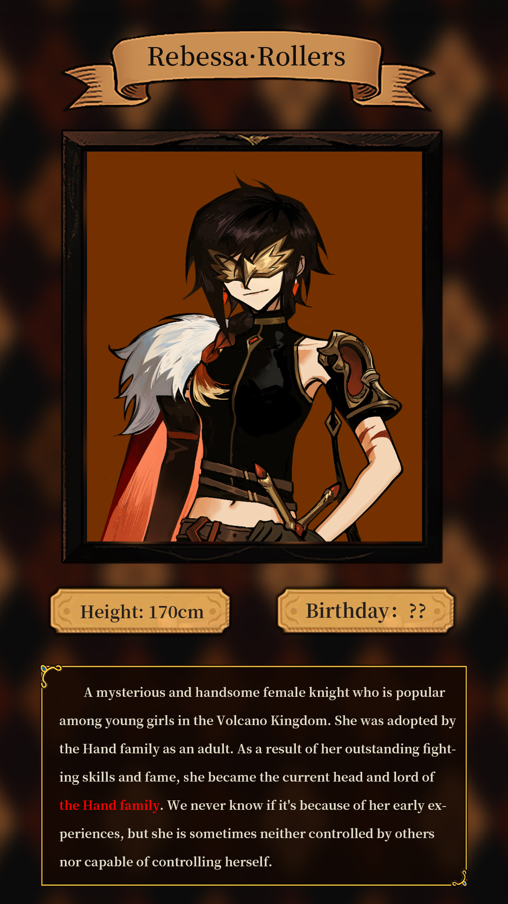

Rebessa is the adopted daughter of the Handel family, the lord representing the Handel side of the three families. She always wears a golden mask and hardly ever takes it off.
She claims to be Asbel's apprentice and has taken over as the new Guts. Worship Asbel very much, often sings his glorious deeds.
Handsome appearance, status, has become a big star among young girls. Ruth is also a fan of hers.
A purely practical person. Treats the code of chivalry and other documents as red tape, not as practical as battlefield experience.
Unexpectedly lazy, not interested in working every day. Often shifts his duties to someone else and goes off to play or rest, even giving his men the order to take the day off. Likes parties and game.
Unstable mental state. At times, he may go into a frenzy, show aggression, or even commit self-harm. Believes that Ruth has a calming effect and that the two of them can calm her down by being together.
Misses the Birdie Festival.
Considers it her mission to defeat the owl girl.